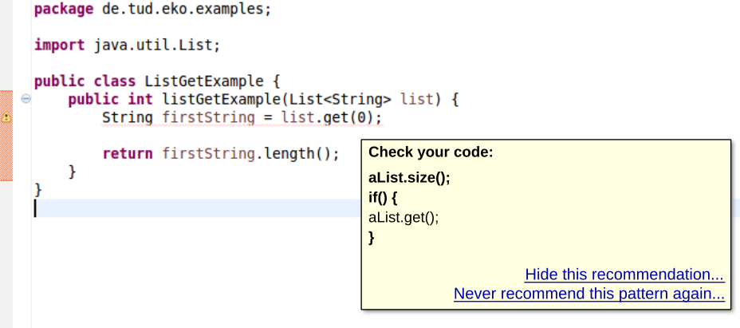
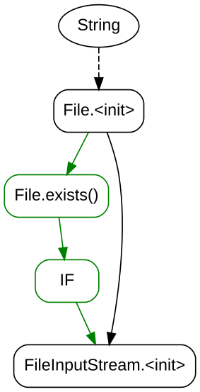
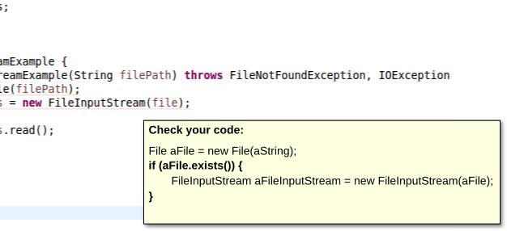

Integrating an API-Misuse Detector into Eclipse
Simon Weiler
Master Thesis Presentation
API Misuses
public void readByte(File f) throws IOException {
InputStream is = new FileInputStream(f);
int firstByte = is.read();
return firstByte;
}
public void listRemoveIfNotAwesome(List<FancyObject> list) {
for (FancyObject obj : list) {
if (obj.isNotAwesome()) {
list.remove(obj);
}
}
}
Outline
- Introduction
- Prototype
- User Interface
- Evaluation
Prototype
GrouMiner
Prototype
User Interface
Five Factors of
User-Interface Quality
for Recommendation Systems in Software Engineering (RSSEs)
Understandability
Assessability
Transparency
Trust
Distraction
by Murphy-Hill and Murphy
User-Interface Proposals
Hiding Recommendations

Usage-Model Visualizations

